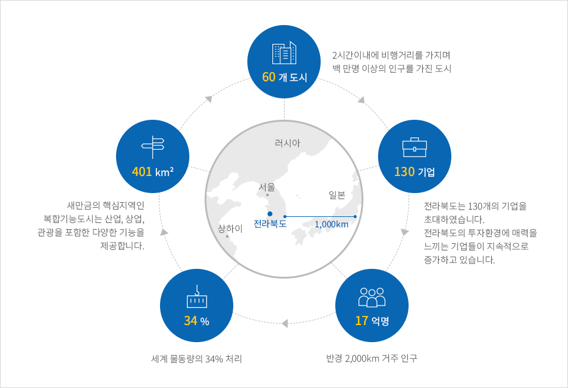
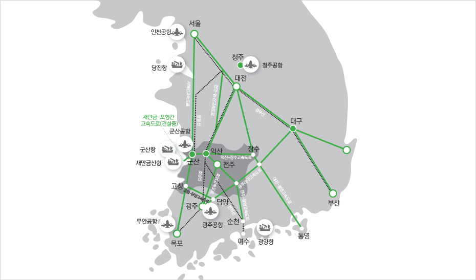
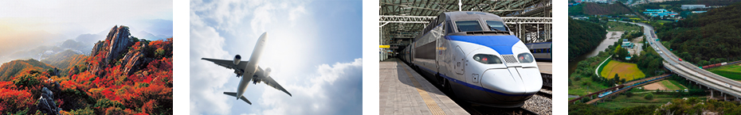
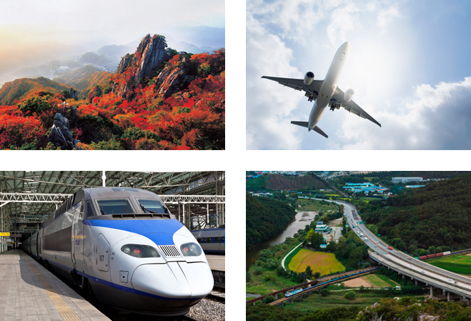

21세기 동북아 비즈니스의 핵심거점
- Home
- 투자 강점
- 21세기 동북아 비즈니스의 핵심거점
전북은 생각보다 가까이에 있습니다.
외국기업 투자 최적지
전라북도는 세계 최대의 시장인 중국에서 불과 500km 떨어진 최단거리에 위치해 있습니다. 뿐만 아니라 중국과 일본, 러시아 등 거대한 배후시장과 인접해 있습니다.
비행거리 2시간 내에 중국 상해와 청도, 일본 동경, 러시아 블라디보스토크 등 인구 100만 명 이상의 도시 60여 곳이 분포되어 있습니다.
또한 대한민국의 어떤 지역에도 반나절만에 도달 가능한 핵심적인 지역에 위치하고 있습니다. 따라서 전라북도는 동북아의 비즈니스 허브로서 지리적인 이점을 가지고 있습니다.


- 60개도시 - 2시간 이내에 비행거리를 가지며 백 만명 이상의 인구를 가진 도시
- 130기업 - 전라북도는 130개의 기업을 초대하였습니다. 전라북도의 투자환경에 매력을 느끼는 기업들이 지속적으로 증가하고 있습니다.
- 17억명 - 반경 2,000km 거주 인구
- 34% - 세계 물동량의 34% 처리
- 401 km² - 새만금의 핵심지역인 복합기능도시는 산업, 상업, 관광을 포함한 다양한 기능을 제공합니다.

최적의 교통환경


전라북도는 중국에 가장 가까운 지역이며 대형선박이 접근하기 쉬운 깊은 수심을 가진 항구를 보유하고 있습니다. 또한 이와 연계된 공항, 도로, 철도 등의 훌륭한 교통 인프라를 보유한 최적화된 비즈니스 환경을 제공합니다.
전라북도에서는 전국 어디든 반나절이면 도착할 수 있습니다. 동서남북을 잇는 8개 고속도로를 비롯해 KTX 등 4개의 철도 노선과 항만, 공항 등 최적의 교통환경을 자랑합니다.
-
고속도로
- 호남, 서해안, 88올림픽(대전↔통영, 익산↔장수, 고창↔담양, 전주↔광양, 새만금↔전주(추진중))
-
철도
- KTX, 호남선, 전라선, 장항선
- 호남선 : 서울↔익산↔목포
- 전라선 : 서울↔익산↔전주↔여수
- 장항선 : 서울↔천안↔장항↔군산↔익산
- 새만금↔군산↔익산(건설중)
-
항만
-
군산항: 28선석, 새만금신항:18선석, 당진항: 36선석, 광양항:78선석
※ 새만금 신항(건설중)
-
평균수심 : 20~45m(대한민국에서 가장 깊은 수심), 연간 물동량 8천만톤
※ 군산, 중국에서 가장 가까운 항구
(단위 : Km)국내 주요항만에서 상해,청도 까지 거리 표 군산 인천 평택 광양 부산 상해 684 832 886 750 887 청도 558 624 576 783 889   -
군산항: 28선석, 새만금신항:18선석, 당진항: 36선석, 광양항:78선석